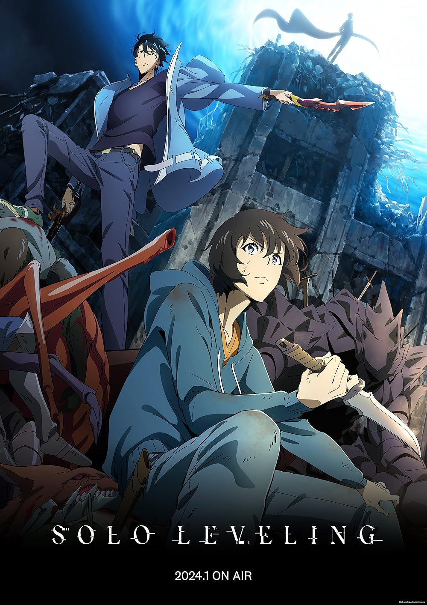
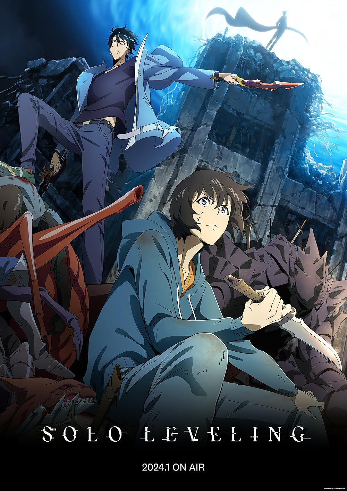

Hi there! I'm Ben, a CS MS student at Stanford University advised by Prof. Jerry Cain. I also did my undergrad at Stanford (2020-2024), completing a BS double major in CS and Math, and a Minor in Creative Writing. During my senior winter, I studied abroad at the University of Oxford, embarking on a Tutorial in Creative Writing. In my free time, I enjoy manga and anime, and listening to J-pop, soundtracks, and rock music 🎸.
Teaching
I love teaching, and want to help make computer science education accessible and welcoming for everyone! At Stanford, I have the privilege of teaching introductory programming (Python, JavaScript, C languages), web applications, computer systems, Unix/Linux OS, and coding for social good. This year, I'm teaching:
Programming Methodologies in JavaScript and Python
Head Teaching Assistant (🍁 Autumn 24-25, Prof. Jerry Cain)
Computer Organization and Systems
Teaching Assistant (☃️ Winter 24-25, Prof. Jerry Cain)
Teaching Assistant (🌱 Spring 24-25, Prof. Nick Troccoli)
Lecturer (🍁 Autumn, ☃️ Winter, 🌱 Spring 24-25)
Last year (2023-24), I lectured CS106S (a 1-unit add-on course to CS106B) in the Autumn and Spring quarters, with Prof. Jerry Cain generously serving as the course's faculty sponsor. I was also a Math Department SUMO peer tutor for two years, holding weekly, deadline-night office hours for MATH 18, 19, 20, 20, and 51 simultaneously.
Education
🌲 Stanford University
M.S. Candidate, Computer Science (Artificial Intelligence Track)
Advisor: Prof. Jerry Cain. CS198 Section Leading (TA)
🌲 Stanford University
B.S. Double Major, Computer Science and Mathematics
Minor, Creative Writing
Advisor: Prof. Jerry Cain. Stanford CS + Social Good, SUMO, SciOly
🏴 University of Oxford
Brasenose College, Study Abroad, Hilary Term 2024
Tutorial in Creative Writing (A+) with Prof. Jennifer Wong. Brasenose Arts.
🌃 University of Minnesota, Twin Cities
Talented Youth Mathematics Program (UMTYMP) Graduate
Accelerated 5-yr sequence of HS math (6th-7th grade) & Calc I-III (8th-10th)
Work Experience
Lawrence Berkeley National Lab — Climate Research Intern
Stanford CS Department — CURIS Research Intern
NVIDIA — Systems Software Engineering Intern
Stanford Artificial Intelligence Laboratory — Undergrad Researcher
Research Papers
Style-Aware Radiology Report Generation with RadGraph and Few-Shot Prompting
Empirical Methods in Natural Language Processing 2023
B. Yan, R. Liu, D. Kuo, S. Adithan, E. Reis, S. Kwak, V. Venugopal, C. O’Connell, A. Saenz, P. Rajpurkar, M. Moor

Learning production functions for supply chains with graph neural networks
AAAI Conference on Artificial Intelligence 2025 (AI for Social Impact Track)
S. Chang, Z. Lin, B. Yan, S. Bembde, Q. Xiu, C.H. Wong, Y. Qin, F. Kloster, X. Luo, R. Palleti, J. Leskovec
Honors
Stanford Graduate Teaching Assistantship, full funding (50% appointment)
National Novel Writing Month Winner, wrote two novels (50,000 words each) in one month (Nov 2023, as the project of my English 190E class)
U.S. Presidential Scholar, one of 161 selected from ~3.6 million graduating seniors nationwide
MN State Math Champion, 1st place individual out of >3000 contestants from 178 high schools (also 1st place team at 2018 State)
American Mathematics Competition Distinguished Honor Roll, Top 1%
Volunteering
- Golden Gate Science Olympiad 2025 — Event Supervisor, 🌏 Dynamic Planet
- Golden Gate Science Olympiad 2024 — Event Supervisor, 🌏 Dynamic Planet
- Golden Gate Science Olympiad 2023 — Event Supervisor, 🛰️ Remote Sensing
- Stanford Science Olympiad 2025 — Event Supervisor, 🌌 Astronomy
- Stanford Science Olympiad 2024 — Event Supervisor, 🌿 Ecology
- Stanford Science Olympiad 2025 — Event Supervisor, 🌌 Astronomy
- Northern California State Science Olympiad 2024 — Event Supervisor, 🗺️ Road Scholar, 🦖 Fossils, 🏔 Geologic Mapping
- Northern California State Science Olympiad 2025 — Event Supervisor, 🗺️ Road Scholar, ☔ Meteorology
Personal
Favorite Manga, Anime, Adaptations
My all-time favorite manga and anime show is Jujutsu Kaisen. I've never seen a movie I liked more than Weathering with You (2019). I also like:


 



Miscellaneous Facts
- Favorite city in the world is 🌉 San Francisco; Golden State Warriors fan
- Have a Books Kinokuniya membership card, the discounts are nice!
- I'm deathly scared of heights, but love rollercoasters to death
- My most-listened-to music artists include 🎶 YOASOBI, Radwimps, Olivia Rodrigo, Charli XCX, BTS, and Coldplay. Always looking for album or song recommendations!
- I'm bilingual in Mandarin Chinese and English, and learning Japanese at the moment! Hoping to learn Spanish and Korean eventually.